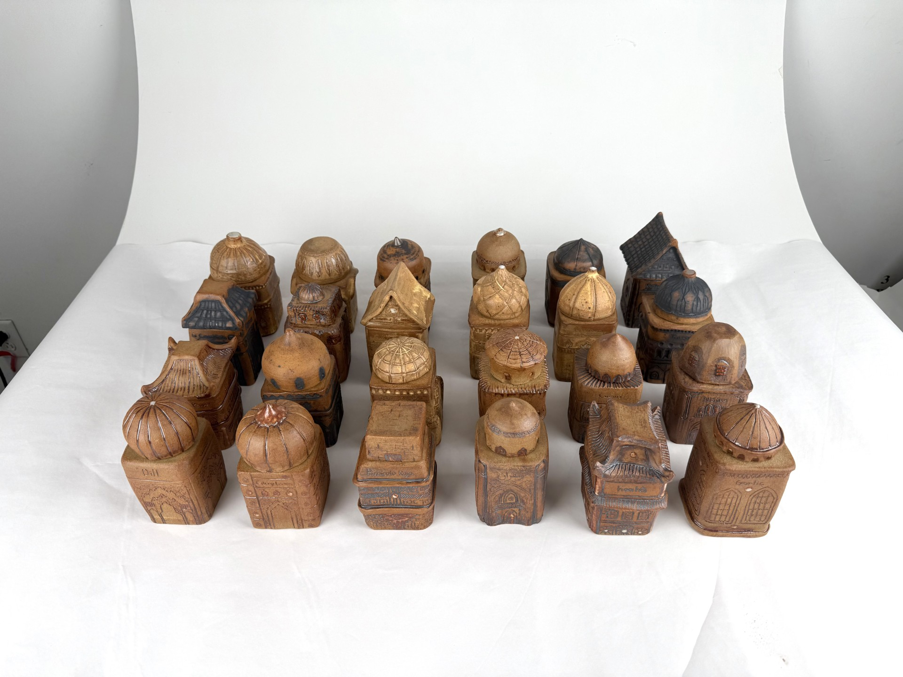
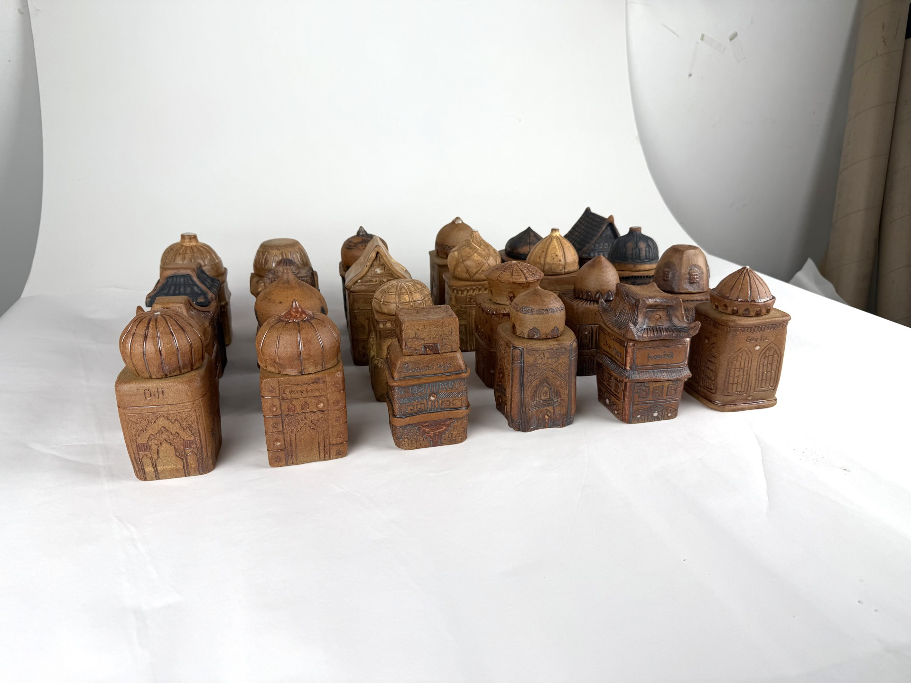
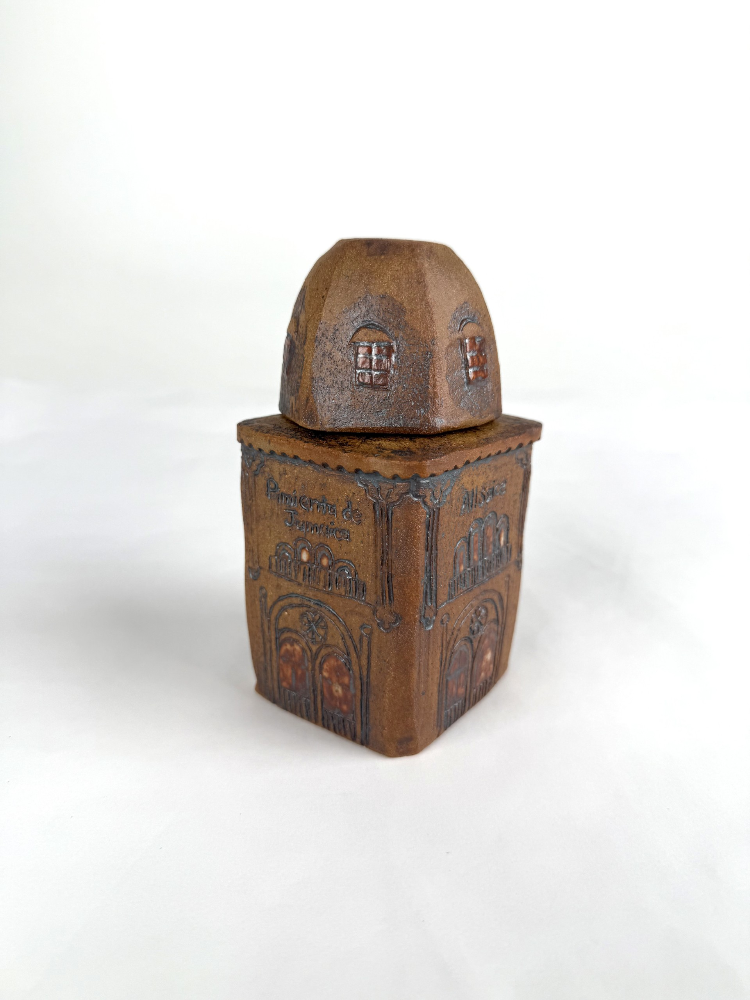
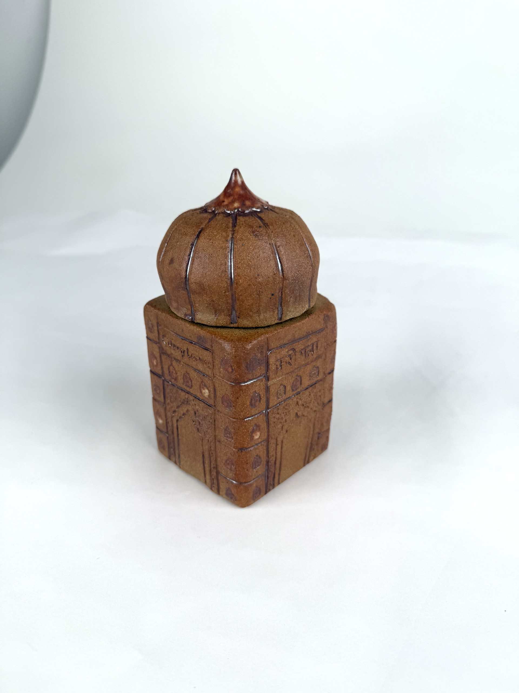
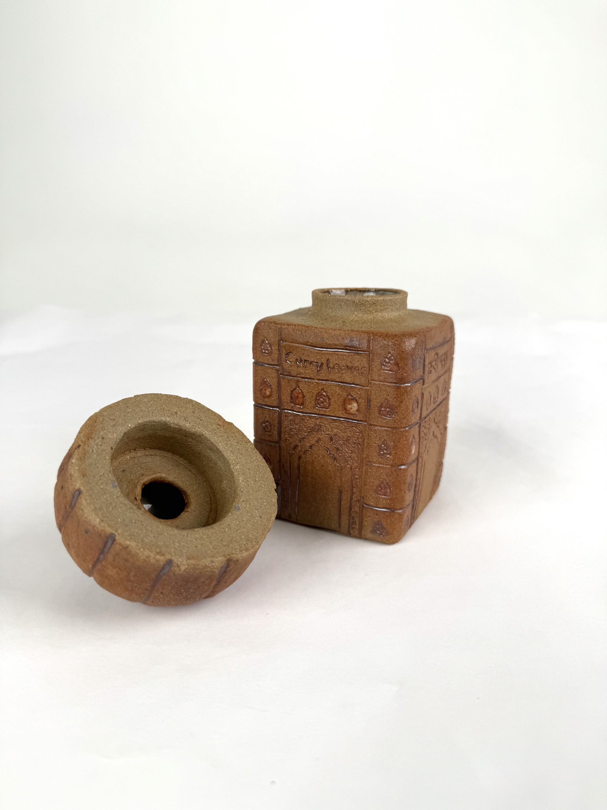
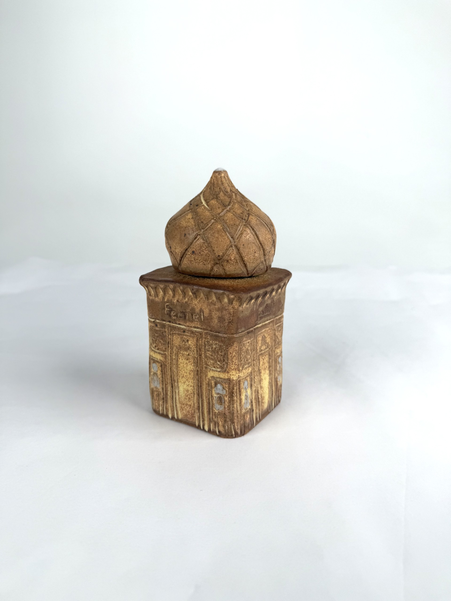
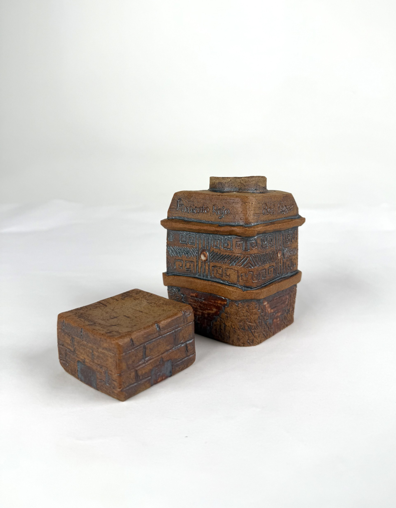
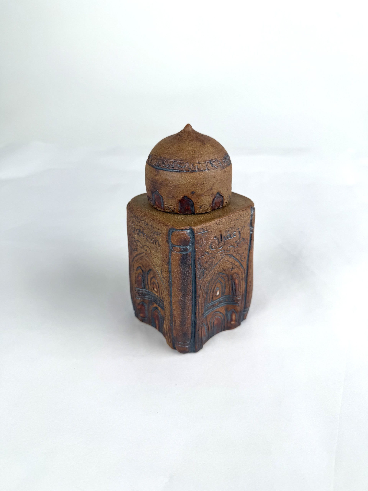
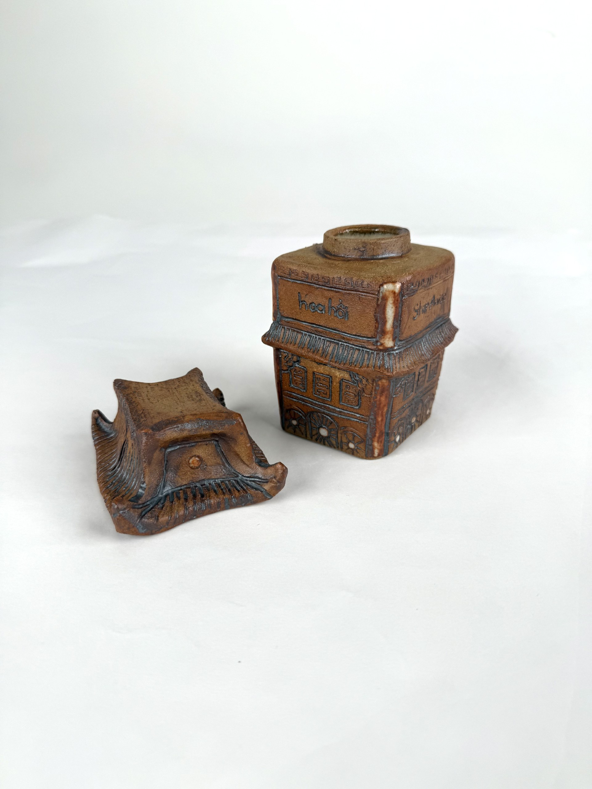

Decolonized Spice Jar Set
Not For Sale
Medium: Stoneware with Glaze
Dimensions: Jars size varies, ~5"H x ~3"W x ~3.75"D
Description: Collection of 24 square spice jars, each with a unique design inspired by different architectural traditions. Intricate carvings filled with metal oxides decorate the sides of every jar. Insides of jars and lids are covered in white glaze.
Further Information:As an honors project for the university wheel throwing course I took during college, I made 24 unique spice jars, inspired by the famous Lenox Spice Village. The Lenox set features 24 house-like jars inspired by European architecture. As an international relations student at the time, I spent a great deal of time learning about the history of spice cultivation as a source of wealth for European colonists. My goal with this project was to feature the different architecutral traditions from the geographic areas where each spice originated or is cultivated. I researched dozens of architectural styles and designed 24 unique jars to reflect each spices' history. I individually threw 24 cylinders, shaped them into square sided vessels, attached seperately thrown bottle-like openings to the top of each one, and built 24 unique lids, some of them thrown on the wheel as well. Then I painstakingly added coils and carved designs into each building. I also carved the name of each spice onto the jars in English and the local langauge of where the spice originated. All of this detail is highlighted by the different metal oxides that I rubbed into them. This felt more honest to the history of colonization than white-washing and painting pastels onto each jar like the original Lenox set. To be honest, some stages of this project were rushed because it was for a class and there were a series of deadlines I needed to meet, but many of the jars turned out beautiful. I am not confident they are completely food safe because of the rushed process, so I do not intend to sell them. I hope to treat this project like a prototype or proof of concept to do the project again at a slower pace with an even greater attention to detail.